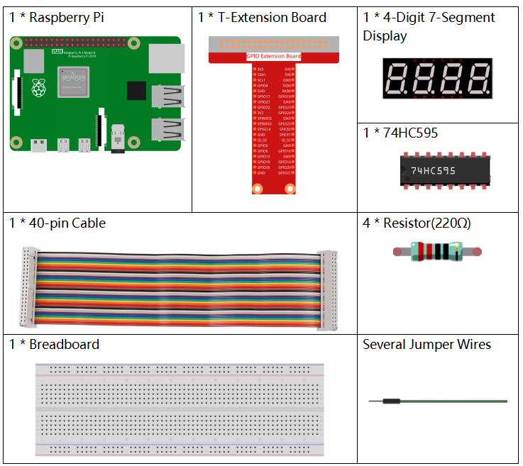
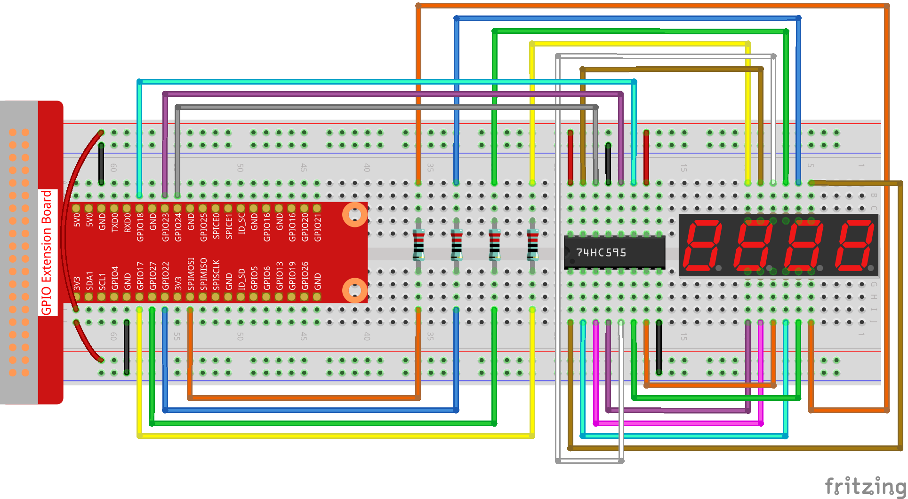

Nota
Ciao e benvenuto nella Community SunFounder per appassionati di Raspberry Pi, Arduino e ESP32 su Facebook! Approfondisci la tua conoscenza su Raspberry Pi, Arduino e ESP32 insieme ad altri appassionati.
Perché unirsi a noi?
Supporto Esperto: Risolvi i problemi post-vendita e le sfide tecniche con l’aiuto della nostra community e del nostro team.
Impara e Condividi: Scambia consigli e tutorial per migliorare le tue competenze.
Anteprime Esclusive: Ottieni accesso anticipato agli annunci dei nuovi prodotti e anteprime.
Sconti Speciali: Godi di sconti esclusivi sui nostri prodotti più recenti.
Promozioni Festive e Giveaway: Partecipa a promozioni speciali e giveaway festivi.
👉 Pronto a esplorare e creare insieme a noi? Clicca su [Qui] e unisciti subito!
1.1.5 Display a 7 Segmenti a 4 Cifre
Introduzione
Ora proviamo a controllare il display a 7 segmenti con 4 cifre.
Componenti
Principio di Funzionamento
Display a 7 Segmenti a 4 Cifre
Il display a 7 segmenti a 4 cifre è composto da quattro display a 7 segmenti che funzionano insieme.

Questo display funziona in modo indipendente per ogni cifra, sfruttando il principio della persistenza visiva. Visualizza rapidamente i caratteri di ogni segmento in un ciclo continuo, formando stringhe continue.
Ad esempio, quando sul display compare «1234», la prima cifra «1» viene visualizzata, mentre «234» no. Dopo un breve intervallo, la seconda cifra mostra «2» e le altre sono spente, e così via in sequenza. Questo processo è molto rapido (generalmente 5 ms), e grazie all’effetto dell’afterglow ottico e al principio della persistenza visiva, possiamo vedere tutte le quattro cifre contemporaneamente.

Codici di Visualizzazione
Per comprendere meglio come i display a 7 segmenti (Catodo Comune) mostrano i numeri, abbiamo realizzato la seguente tabella. I numeri indicano le cifre da 0 a F visualizzate sul display; (DP) GFEDCBA si riferisce ai LED impostati su 0 o 1. Ad esempio, 11000000 significa che DP e G sono impostati su 1, mentre gli altri sono impostati su 0. Pertanto, sul display viene visualizzato il numero 0 e il codice HEX corrisponde al numero esadecimale.

Schema Elettrico
T-Board Name |
physical |
wiringPi |
BCM |
GPIO17 |
Pin 11 |
0 |
17 |
GPIO27 |
Pin 13 |
2 |
27 |
GPIO22 |
Pin 15 |
3 |
22 |
SPIMOSI |
Pin 19 |
12 |
10 |
GPIO18 |
Pin 12 |
1 |
18 |
GPIO23 |
Pin 16 |
4 |
23 |
GPIO24 |
Pin 18 |
5 |
24 |

Procedura Sperimentale
Passo 1: Assembla il circuito.
{kind=link}
Passo 2: Vai nella cartella del codice.
cd ~/davinci-kit-for-raspberry-pi/c/1.1.5/
Passo 3: Compila il codice.
gcc 1.1.5_4-Digit.c -lwiringPi
Passo 4: Esegui il file eseguibile.
sudo ./a.out
Dopo l’esecuzione del codice, il programma inizia un conteggio che incrementa di 1 ogni secondo, e il display a 7 segmenti a 4 cifre mostra il conteggio.
Nota
Se dopo l’esecuzione non funziona o appare l’errore: "wiringPi.h: Nessun file o directory», fai riferimento a Il codice C non funziona?.
Codice
#include <wiringPi.h>
#include <stdio.h>
#include <wiringShift.h>
#include <signal.h>
#include <unistd.h>
#define SDI 5
#define RCLK 4
#define SRCLK 1
const int placePin[] = {12, 3, 2, 0};
unsigned char number[] = {0xc0, 0xf9, 0xa4, 0xb0, 0x99, 0x92, 0x82, 0xf8, 0x80, 0x90};
int counter = 0;
void pickDigit(int digit)
{
for (int i = 0; i < 4; i++)
{
digitalWrite(placePin[i], 0);
}
digitalWrite(placePin[digit], 1);
}
void hc595_shift(int8_t data)
{
int i;
for (i = 0; i < 8; i++)
{
digitalWrite(SDI, 0x80 & (data << i));
digitalWrite(SRCLK, 1);
delayMicroseconds(1);
digitalWrite(SRCLK, 0);
}
digitalWrite(RCLK, 1);
delayMicroseconds(1);
digitalWrite(RCLK, 0);
}
void clearDisplay()
{
int i;
for (i = 0; i < 8; i++)
{
digitalWrite(SDI, 1);
digitalWrite(SRCLK, 1);
delayMicroseconds(1);
digitalWrite(SRCLK, 0);
}
digitalWrite(RCLK, 1);
delayMicroseconds(1);
digitalWrite(RCLK, 0);
}
void loop()
{
while(1){
clearDisplay();
pickDigit(0);
hc595_shift(number[counter % 10]);
clearDisplay();
pickDigit(1);
hc595_shift(number[counter % 100 / 10]);
clearDisplay();
pickDigit(2);
hc595_shift(number[counter % 1000 / 100]);
clearDisplay();
pickDigit(3);
hc595_shift(number[counter % 10000 / 1000]);
}
}
void timer(int timer1)
{
if (timer1 == SIGALRM)
{
counter++;
alarm(1);
printf("%d\n", counter);
}
}
void main(void)
{
if (wiringPiSetup() == -1)
{
printf("setup wiringPi failed !");
return;
}
pinMode(SDI, OUTPUT);
pinMode(RCLK, OUTPUT);
pinMode(SRCLK, OUTPUT);
for (int i = 0; i < 4; i++)
{
pinMode(placePin[i], OUTPUT);
digitalWrite(placePin[i], HIGH);
}
signal(SIGALRM, timer);
alarm(1);
loop();
}
Spiegazione del Codice
const int placePin[] = {12, 3, 2, 0};
Questi quattro pin controllano i pin di anodo comune dei display a 7 segmenti a quattro cifre.
unsigned char number[] = {0xc0, 0xf9, 0xa4, 0xb0, 0x99, 0x92, 0x82, 0xf8, 0x80, 0x90};
Un array di codici segmenti da 0 a 9 in esadecimale (anodo comune).
void pickDigit(int digit)
{
for (int i = 0; i < 4; i++)
{
digitalWrite(placePin[i], 0);
}
digitalWrite(placePin[digit], 1);
}
Seleziona la posizione del valore. Ogni volta, solo una posizione dovrebbe essere abilitata. La posizione abilitata verrà impostata su livello alto.
void loop()
{
while(1){
clearDisplay();
pickDigit(0);
hc595_shift(number[counter % 10]);
clearDisplay();
pickDigit(1);
hc595_shift(number[counter % 100 / 10]);
clearDisplay();
pickDigit(2);
hc595_shift(number[counter % 1000 / 100]);
clearDisplay();
pickDigit(3);
hc595_shift(number[counter % 10000 / 1000]);
}
}
La funzione viene utilizzata per impostare il numero visualizzato sul display a 7 segmenti a quattro cifre.
clearDisplay(): scrive 11111111 per spegnere i LED sul display a 7 segmenti e cancellare il contenuto visualizzato.pickDigit(0): seleziona il quarto display a 7 segmenti.hc595_shift(number[counter%10]): il numero della cifra singola del contatore viene visualizzato sul quarto segmento.
signal(SIGALRM, timer);
Questa è una funzione fornita dal sistema, il cui prototipo di codice è:
sig_t signal(int signum,sig_t handler);
Dopo aver eseguito signal(), una volta che il processo riceve il corrispondente segnale signum (in questo caso SIGALRM), interrompe immediatamente l’attività in corso e avvia la funzione impostata (in questo caso timer(sig)).
alarm(1);
Anche questa è una funzione fornita dal sistema. Il prototipo di codice è:
unsigned int alarm (unsigned int seconds);
Genera un segnale SIGALRM dopo un certo numero di secondi.
void timer(int timer1)
{
if (timer1 == SIGALRM)
{
counter++;
alarm(1);
printf("%d\n", counter);
}
}
Utilizziamo le funzioni sopra per implementare la funzione timer.
Dopo che alarm() genera il segnale SIGALRM, viene chiamata la funzione timer. Viene aggiunto 1 al contatore e la funzione alarm(1) verrà richiamata ogni secondo in modo ripetuto.